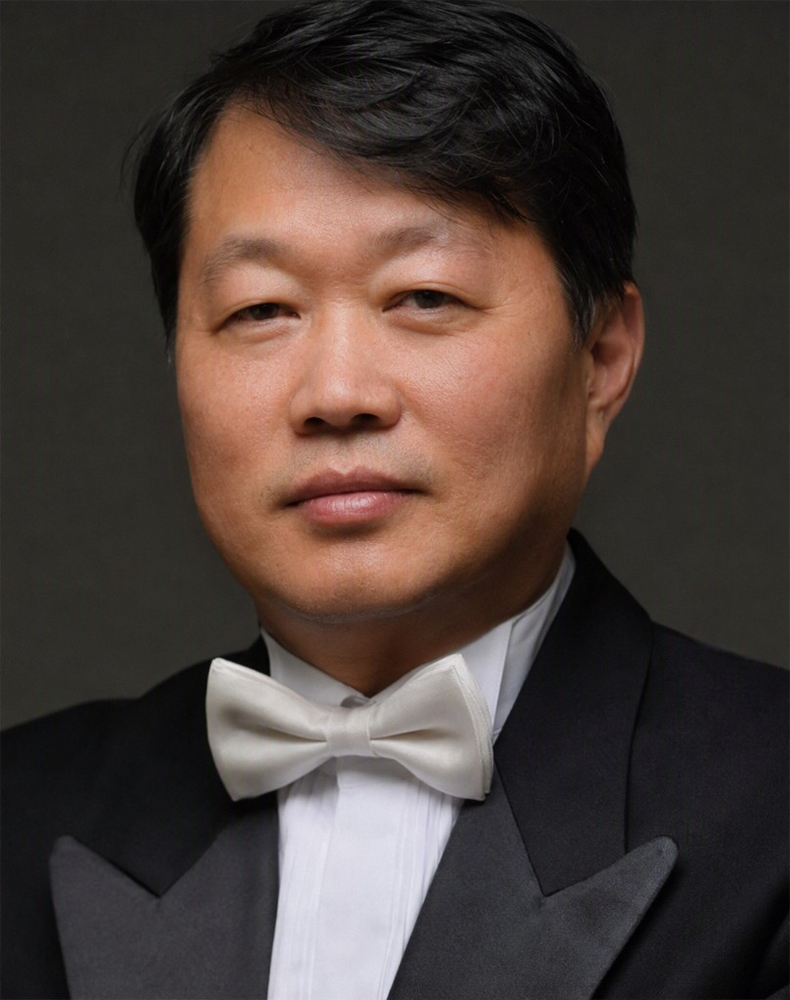
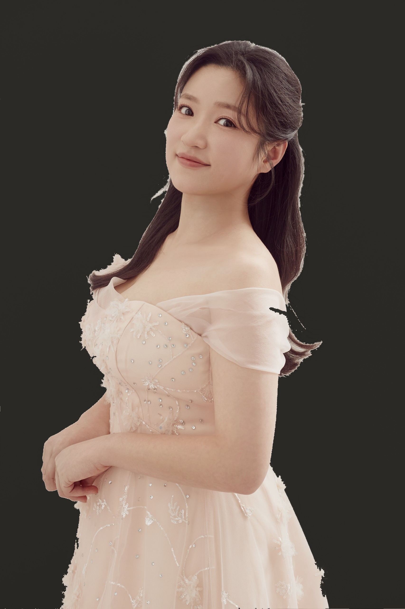
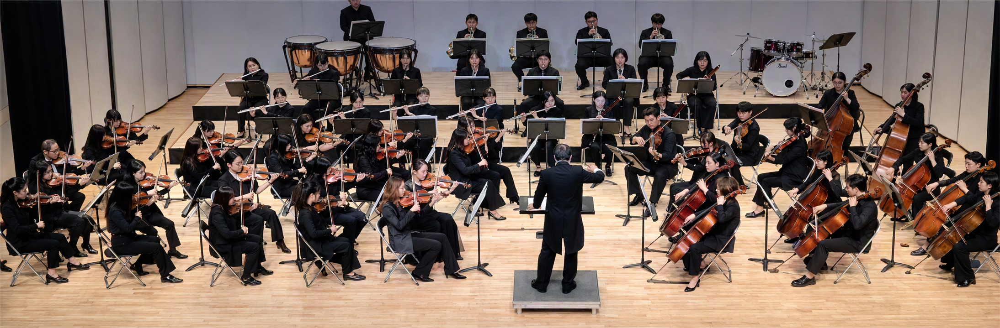

프로그램Program
1부Part I
É. Waldteufel 1837–1915
Les Patineurs (Skaters’ Waltz), Op.183스케이팅 왈츠
성악 무대Soprano 이진영
이수인 1939–2021
내 마음의 강물
F. Loewe 1901–1988
I Could Have Danced All Night뮤지컬 〈마이 페어 레이디〉 중 ‘밤새도록 춤출 수 있다면’
J. Williams b. 1932
Theme from ‘Schindler’s List’영화 〈쉰들러 리스트〉 테마
Intermission
2부Part II
L. v. Beethoven 1770–1827
Symphony No.5 in C minor, Op.67 ‘Fate’교향곡 제5번 C단조, Op.67 ‘운명’
- I.Allegro con brio
- II.Andante con moto
- III.Scherzo. Allegro
- IV.Allegro
지휘자Conductor

Conductor
한동송
- Brooklyn College, The City University of New York (M.M.) 석사
- 경성대학교 예술대학 음악학과 졸업
- 마산시립교향악단 · Brooklyn Orchestra · New York Christian Orchestra 수석
- 창신대학교 외래교수, 부산필하모니아 오케스트라 수석 역임
- (현) 브니엘예중 오케스트라 지휘, 부산다문화국제학교 출강
- 부산멜로스 오케스트라 악장, 소노 오케스트라 대표
협연자Guest Soloist

Soprano
이진영
- 인제대학교 대학원 음악학과 박사과정 졸업
- 이탈리아 파르마 국립음악원 수료
- 이탈리아 밀라노 도니제티 아카데미 전문연주자 과정 졸업
- 오페라 《람메르무어의 루치아》, 《버섯피자》, 《라 트라비아타》, 《피가로의 결혼》, 《사랑의 묘약》 등 주역 출연
- (현) 인제대학교, 동원과학기술대학교 외래교수
제31회 정기연주회
부산교사오케스트라와 함께 떠나는
베토벤과 발트토이펠 음악여행


Ludwig van Beethoven
1770 – 1827
Émile Waldteufel
1837 – 1915
2026.
12.
1.
[화]
18:30
을숙도문화회관 대공연장
